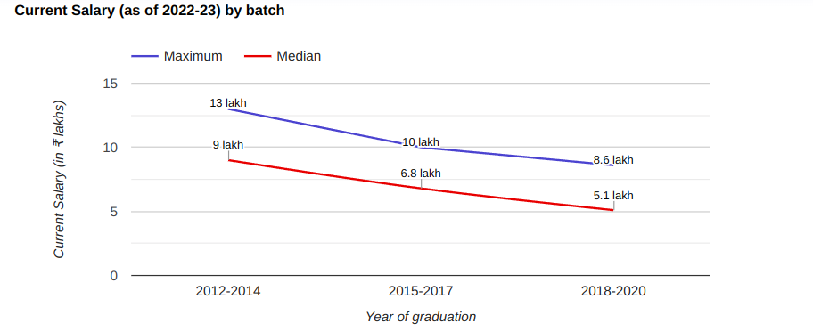

Situated in Sangli, Maharashtra, Walchand College of Engineeringis a prestigious Institute , incepted in 1947. The span of programs offered 22 courses include Degree and Diploma in Full Time mode. Walchand College of Engineering offers a range of 7 UG courses. These courses are aimed to provide students with the necessary skills and knowledge in their field of interest. Candidate can pursue in multiple range of courses like B.E. / B.Tech, M.E./M.Tech, After 10th Diploma with the stream of Engineering. From introductory courses to more advanced topics, there are a variety of courses to choose from. Students who join Walchand College of Engineering stand to gain professional level of expertize and proficiency through its highly trained & experienced faculty in the studies of Civil Engineering, Computer Science Engineering, Control Systems, Power Engineering, Production Engineering, Environmental Engineering, Structural Engineering, Electronics Engineering, Mechanical Engineering, Electrical Engineering, Information Technology. Courses offered by institute are well recognized and acknowlegded by approving body like AICTE. Institute offers this course with intake of 830 candidates. Most of these courses are offerred at very affordable fees. For students institute has facilities & infrastructure like Auditorium, Boys Hostel, Cafeteria, Girls Hostel, Gym, Hospital / Medical Facilities, Hostel, Labs, Library, Sports Complex, Wi-Fi Campus.
Programs Offered:

Placement Graph :
